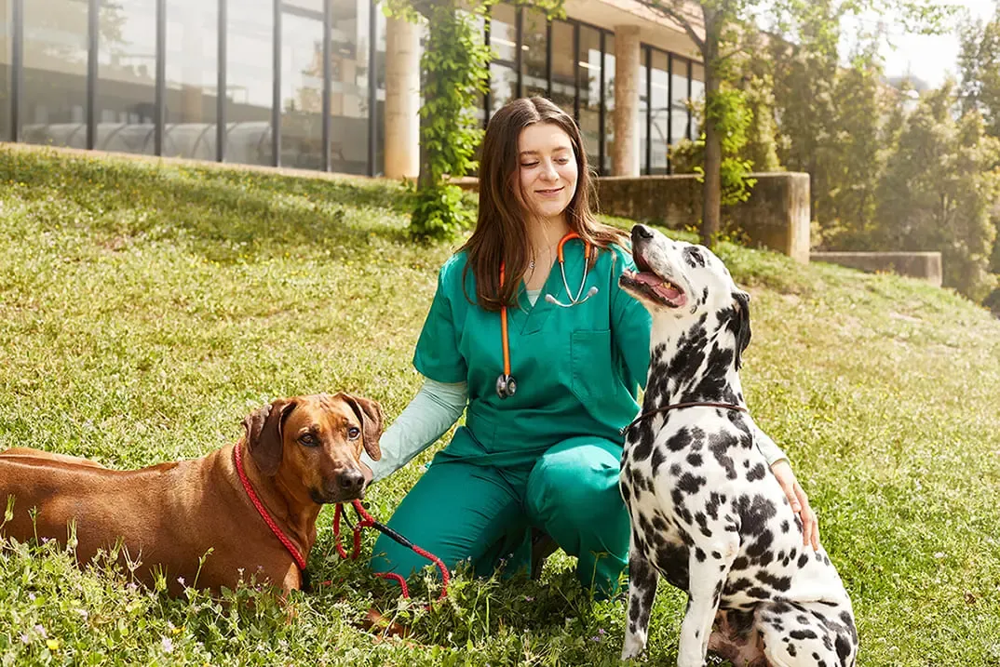
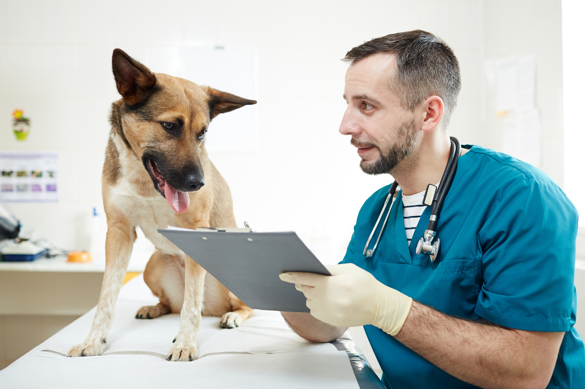

Happy Paws Adoption Center is dedicated to rescuing and caring for animals in need. Our center provides shelter, food, medical attention, and love for dogs and cats while they wait to find their forever homes
Happy Paws was founded in 2018 by a group of animal lovers who wanted to make a difference in the lives of homeless pets
What started as a small volunteer effort has grown into a community-supported adoption center helping dozens of animals every year
Our mission is to promote responsible pet adoption and provide a safe, loving environment for animals that need a second chance
All pets receive veterinary care and daily attention
We carefully match pets with the right families
Our center is supported by volunteers and local donors
Founder

Veterinarian

Veterinary Assistant
Adoption Coordinator